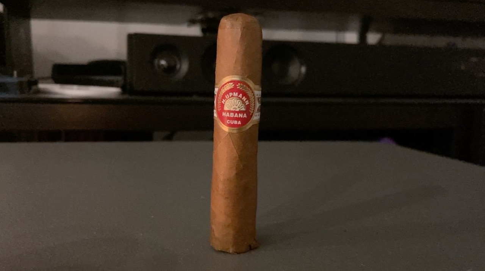
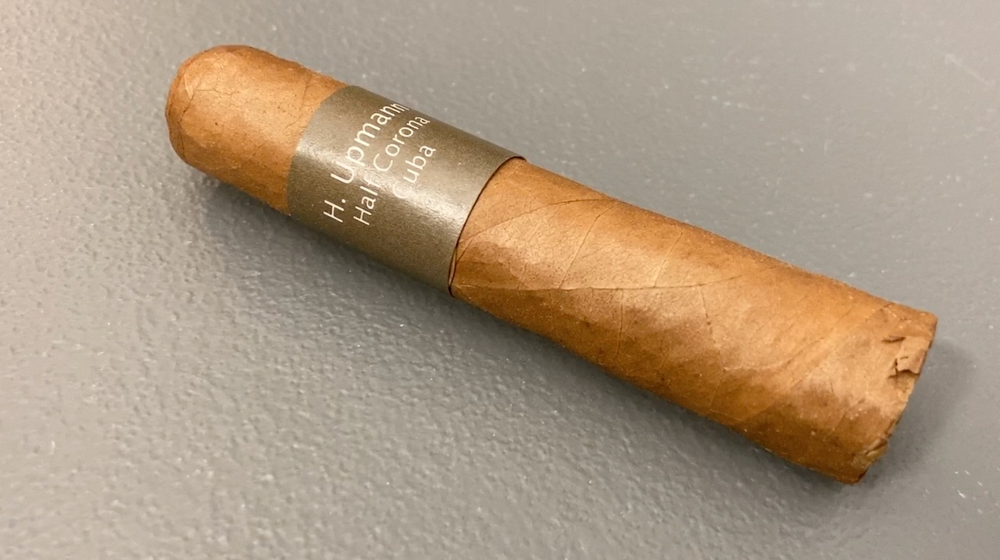
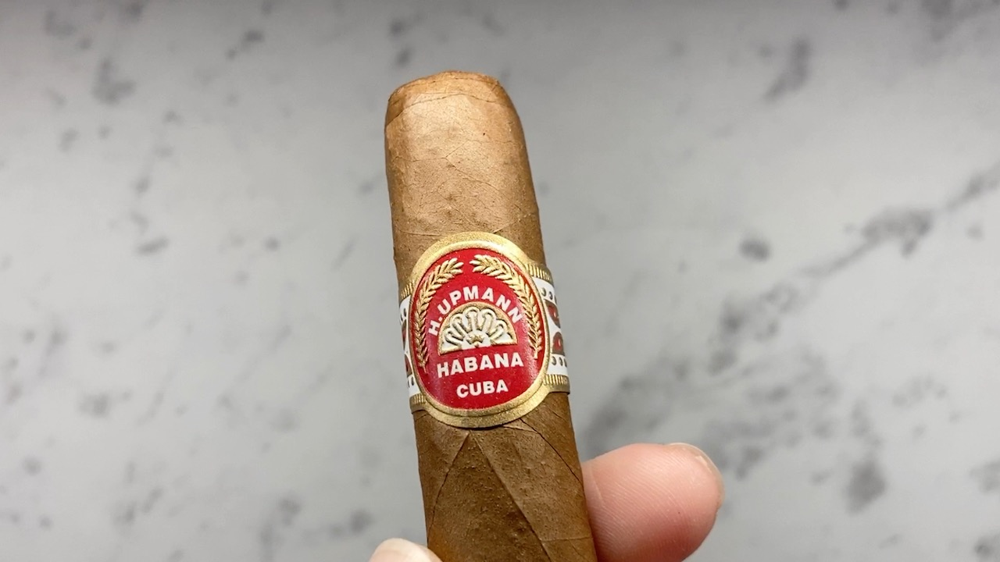
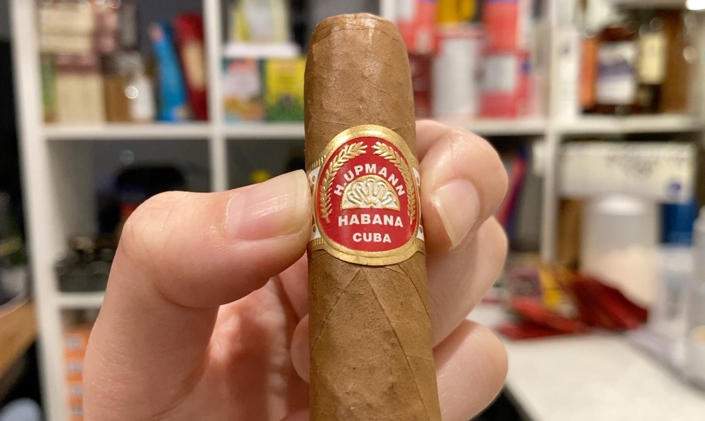
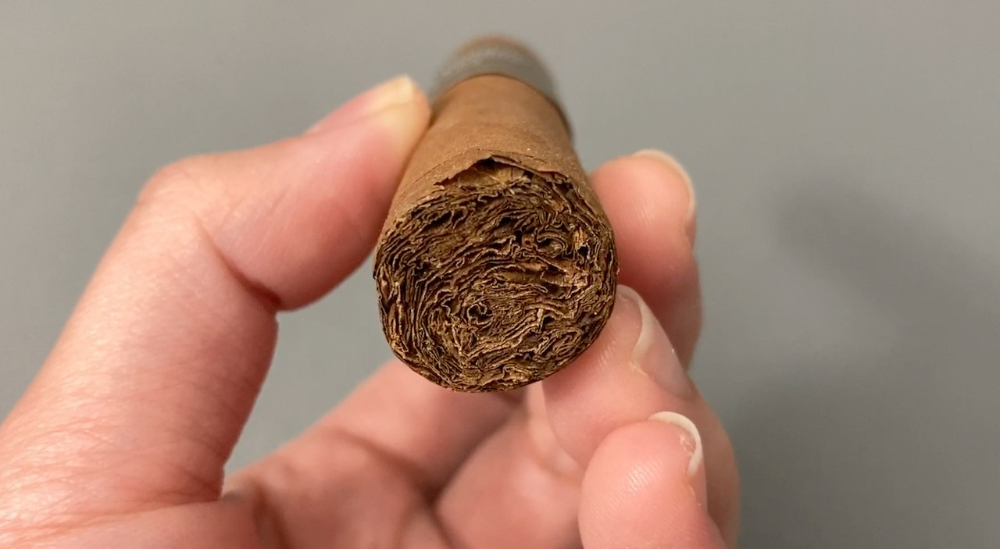
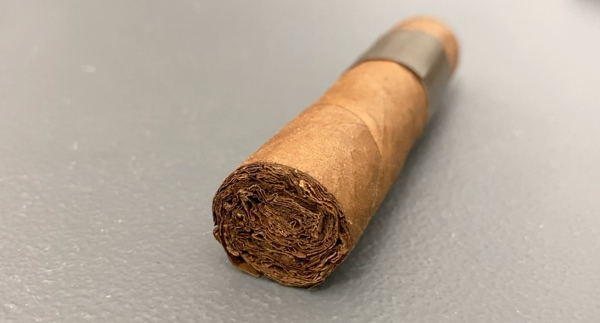
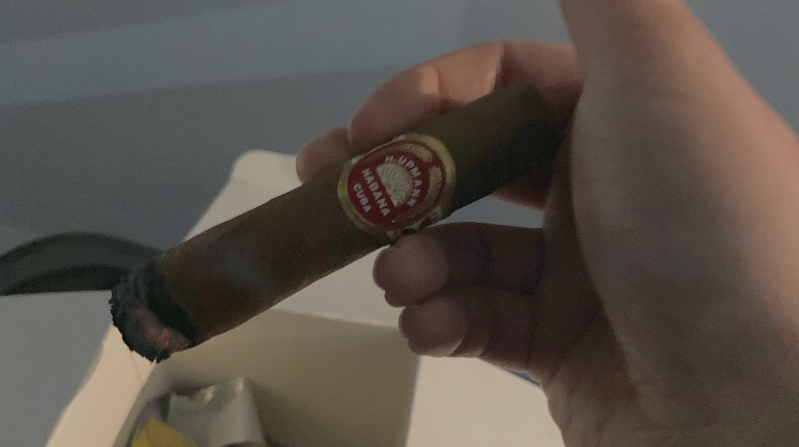
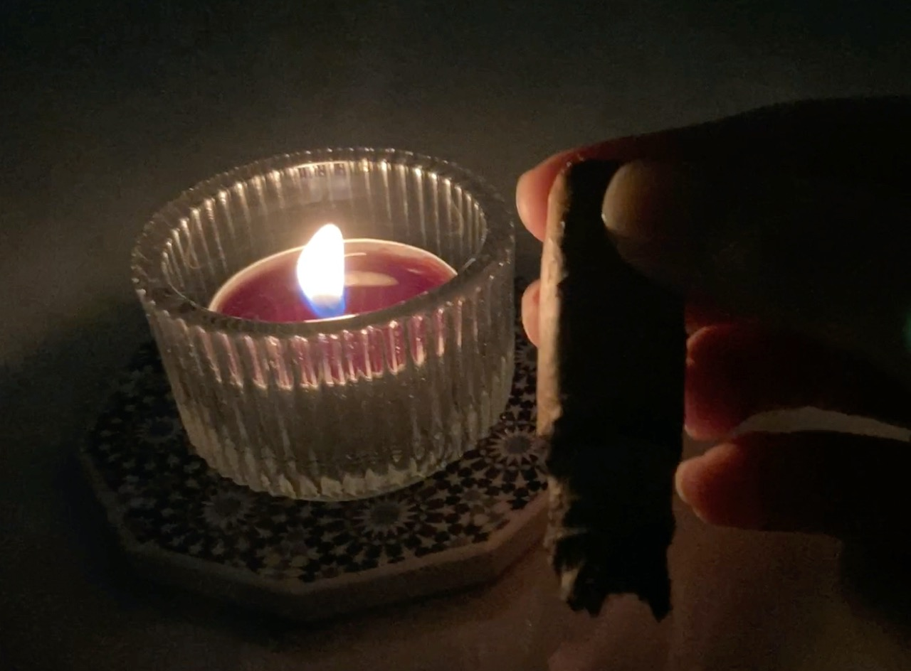
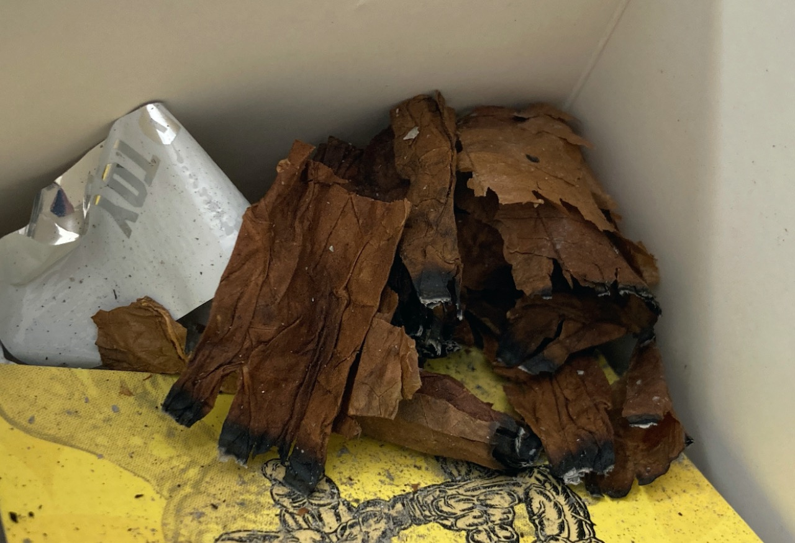
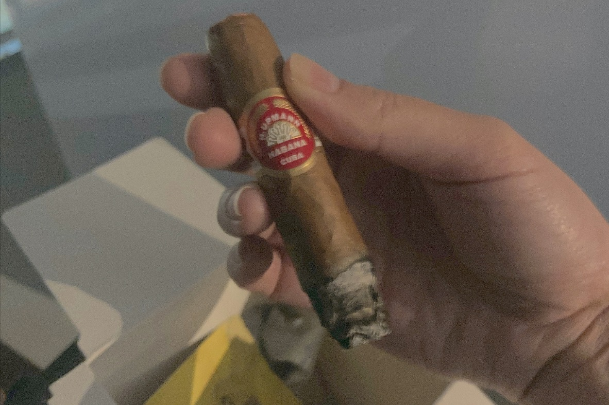

Cigar Review: H. Upmann Half Corona
This is the first cigar that I've ever tried and ever hold in hand. I thoroughly enjoy it!
 
It's a very smooth and creamy cigar. I agree with all reviewers that said that there's hint of coffee, chocolate/cocoa, and such. However, as a first time cigar smoker, those flavours don't come immediately to my mind. I had to actively look for it to find the scent.
 
The foot of my cigar was slightly cracked because the saleslady put it in a zipper bag and accidentally damage it. Cigar is really delicate. Fortunately, it did not affect the burn of the cigar that much. Pretty much just burned passed it when I light it up.
 
I did not taste any spice from this cigar as the others have, but I'm guessing it could be because it was sitting in the store for quite some time or my taste buds just not developed yet. I purchased it in the afternoon and light it a few hours after I got home. I did not age it, but it was so extremely smooth and just so sweet.

The start and the end of the cigar taste very smooth and sweet to me. However, in the midway, I think the fire went out and all I could taste was bitterness (probably just tar). I tapped off the ash, re-light it, took a short washroom break, and came back to take a puff. The smooth sweet flavour was back!
It is a pretty short cigar at a size of zippo case. The time for this cigar is supposed to be lasting about 20-40 minutes. However, it turned out to be slightly more than an hour for me. I quite enjoy the time with it though. Every single moment!
I don't really know when to end the cigar, but I pretty much ended it where I lost all the flavour and the cigar is smoking on both ends. Since it was my first cigar, I also took it apart to see what it's inside. Not the prettiest, but I tried.
 
Overall, I really like the flavour of this cigar and enjoyed it as a whole! It's difficult to give a rating for this as this is the only cigar that I've ever tried, but I would definitely love to get more personally! 😀
| Where did I get it? | Shefield Expres (Guildford) |
| Price | About CAD$32 |
| Date of Acquisition | May 29, 2023 |
